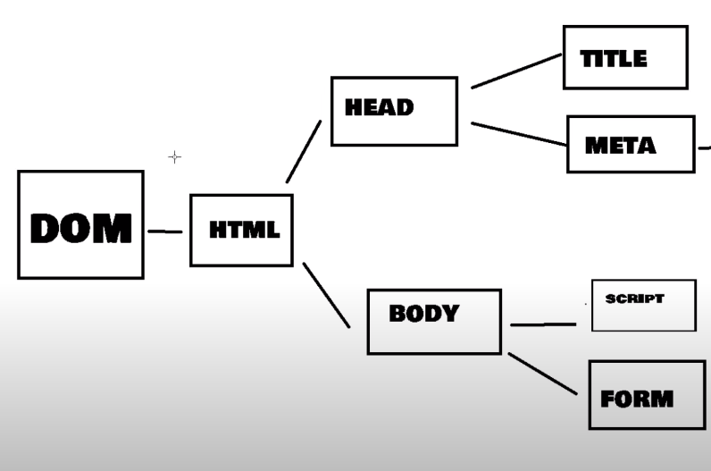

Lección 13 - DOM
Definición: DOCUMENT OBJECT MODEL. Es un interfaz que contiene todos los objetos estandares que nos permiten representar un documento
HTML XML o XHTML. En si es el documento que contiene todos los elementos, el HTML, los estilos, loa atributos, etc.
Conceptos Base:
- Nodo Es cualquier etiqueta del cuerpo, un parrafor, el body, o incluso las etiquetas de una lista.

Tipos de Nodo:
- Document: Es el nodo raiz a partir del cual derivan el resto de nodos
- Element: Nodos definidos por etiquetas html. Ejempo: etiqueas p, b, etc.
- Text: El texto dentro de un nodo element, se considera un nodo hijo de tipo text.
- Atribute: Los atributos de las etiquetas deinifenen nodos
-
Comentarios y otros tipos de nodos: Los comentarios y otros elementos como las declaraciones doctype en cabecera de los documentos
HTML generan nodos.